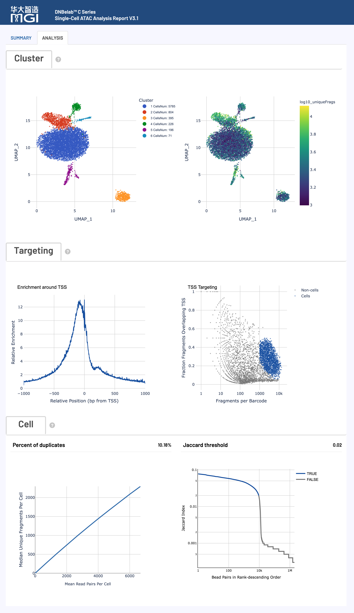

scATAC Analysis Output¶
Complete Guide to Single-Cell ATAC Sequencing Analysis Output Files
Overview ¶
After single-cell ATAC sequencing analysis is complete, a standardized structure of files and subdirectories is generated in the specified output directory for chromatin accessibility analysis and epigenomic research.
Tip: All output files use standard formats compatible with mainstream single-cell epigenomic analysis tools (e.g., Signac, ArchR), adhering to internationally accepted data format standards.
Directory Structure ¶
.
├── alignment.fragments.sorted.tagged.bam # QC-filtered alignment results (requires 'need_bam' parameter for analysis)
├── alignment.fragments.sorted.tagged.bam.bai # Index file for the alignment results
├── filter_peak_matrix/ # Directory for the filtered peak matrix in MEX format
│ ├── barcodes.tsv.gz # Barcode information for filtered cells
│ ├── matrix.mtx.gz # Peak signal data in sparse matrix format for filtered data
│ └── peaks.bed.gz # Peak position information for filtered data
├── fragments.tsv.gz # Contains all fragments aligned to the genome
├── fragments.tsv.gz.tbi # Index file for fragments, for fast random access
├── filtered.fragments.tsv.gz # QC-filtered ATAC fragment file, containing only fragments from filtered cells
├── filtered.fragments.tsv.gz.tbi # Tabix index for the filtered fragments file, for fast querying of genomic intervals
├── metrics_summary.xls # Summary table of analysis quality metrics
├── raw_peak_matrix/ # Directory for the raw peak matrix in MEX format
│ ├── barcodes.tsv.gz # Raw cell barcode information
│ ├── matrix.mtx.gz # Raw peak signal data in sparse matrix format
│ └── peaks.bed.gz # Raw peak position information
├── singlecell.csv # Summary table of cell information
└── *_scATAC_report.html # Analysis report in HTML format
File Details ¶
ATAC Fragment and Peak Files ¶
Core Content: ATAC-seq fragment information and peak identification results, containing complete chromatin accessibility data and cell barcode tags.
fragments.tsv.gz¶
fragments.tsv.gz is a compressed TSV file containing ATAC-seq fragment information, which is one of the core data for downstream analysis. Its main features and contents are as follows:
-
Purpose:
- Chromatin Accessibility Analysis: Precisely locate the genomic coordinates of each open chromatin region.
- Data Visualization: Can be directly loaded as a BED file in genome browsers like IGV and UCSC for visualization.
- Downstream Tool Input: Compatible with mainstream single-cell analysis tools such as ArchR and Signac.
-
Content & Format:
- The file is in BED-like format, with each row representing a unique ATAC-seq fragment.
-
The file contains the 5 columns of information as shown in the table below:
-
Coordinate Adjustment:
- To accurately locate the transposase cleavage site, the fragment intervals in the file are adjusted: the start position is shifted 4bp forward from the leftmost alignment position, and the end position is shifted 5bp backward from the rightmost alignment position.
fragments.tsv.gz.tbi¶
The Tabix index file for fragments.tsv.gz.
- Core Purpose:
- Fast Data Access: Allows for rapid, genome-interval-based querying of large
fragments.tsv.gzfiles without reading the entire file. - Tool Performance Optimization: Used by tools like ArchR, Signac, and IGV to efficiently load and process data from specific regions.
- Fast Data Access: Allows for rapid, genome-interval-based querying of large
- Format:
- A standard binary index file generated by the
tabixtool.
- A standard binary index file generated by the
filtered.fragments.tsv.gz¶
This is the ATAC-seq fragment file after cell quality control and filtering. It is a subset of fragments.tsv.gz, containing only fragments from high-quality cells.
- Core Purpose:
- Core Downstream Analysis: This is the recommended input file for core downstream steps such as cell clustering and differential accessibility analysis.
- Improved Signal-to-Noise Ratio: Using this file improves the accuracy and signal-to-noise ratio of the analysis results by removing low-quality cells and background noise.
- Content & Format:
- The file format is identical to
fragments.tsv.gz(compressed BED-like TSV) and contains the same 5 columns. - It includes only fragments from barcodes identified as "real cells" by the cell filtering algorithm (e.g., based on TSS enrichment and number of fragments in peaks).
- The file format is identical to
filtered.fragments.tsv.gz.tbi¶
The Tabix index file for filtered.fragments.tsv.gz.
- Core Purpose:
- Efficient Downstream Analysis: Ensures that downstream tools (like ArchR, Signac) can quickly and efficiently access data from specific genomic regions when using the filtered fragment file.
- Format:
- A standard binary index file generated by the
tabixtool.
- A standard binary index file generated by the
alignment.fragments.sorted.tagged.bam¶
This is the ATAC-seq alignment result file containing all fragments that have a valid barcode and were successfully aligned.
-
Core Purpose:
- In-depth Analysis & Visualization: Can be used in genome browsers like IGV for deep visualization to inspect alignments at specific loci.
- Custom Analysis: Provides the raw input for advanced users who need to directly manipulate alignment-level data.
-
Content & Format:
- Uses the international standard BAM (Binary Alignment Map) format.
- The file is sorted by genomic coordinates and indexed (with a
.baifile) for fast random access. - Each read is tagged with cell origin information via TAG fields.
-
Key TAG Field Descriptions:
-
Cell and molecular barcode information is stored in the following TAG fields:
-
alignment.fragments.sorted.tagged.bam.bai¶
The index file for alignment.fragments.sorted.tagged.bam.
- Core Purpose:
- Fast Data Access: Allows tools like IGV and Samtools to quickly jump to and read alignment data from any genomic region without loading the entire BAM file.
- Performance Guarantee: Essential for the performance of any tool that performs random access operations on the BAM file.
- Format:
- Standard BAI (BAM Index) format generated by the
samtools indexcommand.
- Standard BAI (BAM Index) format generated by the
Peak Matrix Files ¶
Core Content: The single-cell peak signal count matrix, divided into raw and quality-controlled filtered data, using the standard sparse matrix format.
Filtered Peak Matrix (filter_peak_matrix/)¶
Contains the peak count matrix after high-quality cell filtering, serving as the core data for downstream quantitative analysis.
-
Core Purpose:
- Downstream Quantitative Analysis: The primary input for analyses such as cell clustering, differential accessibility analysis, and trajectory inference.
- High-Quality Data: Contains only barcodes identified as real cells, ensuring the accuracy of the analysis results.
-
Content & Format:
- Uses the standard Matrix Market Exchange (MEX) format, consisting of the following three compressed files:
-
Format Advantages:
- Space-Efficient: The sparse matrix format (
.mtx) saves significant storage space by only storing non-zero elements. - Highly Compatible: The MEX format is a standard in the single-cell community, compatible with almost all mainstream analysis tools like Seurat, Signac, Scanpy, etc.
- Space-Efficient: The sparse matrix format (
Raw Peak Matrix (raw_peak_matrix/)¶
Contains the raw peak count matrix for all detected cell barcodes (without filtering).
-
Core Purpose:
- Quality Control Assessment: Can be used to evaluate the effectiveness of cell filtering or to perform manual filtering based on custom criteria.
- Data Integrity: Preserves all original data, which can be used for deep mining or re-analysis if needed.
-
Content & Format:
- Uses the standard Matrix Market Exchange (MEX) format, with the same file composition as the
filter_peak_matrix/directory. - Includes all detected barcodes, including high-quality cells, low-quality cells, and background droplets.
- Uses the standard Matrix Market Exchange (MEX) format, with the same file composition as the
Analysis Summary ¶
Core Content: A summary of experimental quality assessment and statistical metrics, providing complete data quality control information.
metrics_summary.xls¶
An Excel-formatted summary table of key analysis metrics, providing a comprehensive assessment of the overall experiment quality.
-
Core Purpose:
- Quality Assessment: Quickly evaluate key metrics such as sequencing data quality, alignment efficiency, and cell identification results.
- Results Overview: Get a comprehensive understanding of the analysis results without having to inspect all files.
-
Content & Format:
- Contains key metrics from three main categories:
- Includes built-in recommended quality control thresholds for user convenience:
Recommended Quality Thresholds:
- Valid Barcode Ratio: >70%
- Q30 Base Quality: >75% (Barcode and UMI regions)
- Genome Alignment Rate: >50%
- TSS Enrichment Score (Human/Mouse): >4
- Fraction of Fragments in Peaks: >15%
- Fraction of Fragments in TSS: >10%
- Percentage of Duplicate Reads: >10%
singlecell.csv¶
A CSV-formatted table of cell-level quality control information, recording detailed statistics for each cell barcode.
-
Core Purpose:
- Fine-grained QC: Allows users to perform more detailed cell filtering and analysis based on custom criteria.
- Downstream Analysis Input: Can be used as cell metadata input for analysis tools like Signac and Scanpy.
-
Content & Format:
- Each row represents one cell barcode.
- Key columns include: number of fragments, number of peaks, number of fragments in TSS/peak regions, whether it is identified as a high-quality cell, bead merging information, etc.
*_scATAC_report.html¶
An interactive, comprehensive analysis report in HTML web format.
-
Core Purpose:
- Results Visualization: Intuitively displays key analysis results such as QC metrics, cell clustering, and TSS enrichment in the form of interactive charts.
- Results Interpretation: Provides the biological significance and technical explanation of various metrics to help users interpret the data deeply.
- Easy Sharing: A single HTML file that is easy to circulate and share.
-
Content & Format:
- Can be opened in any modern browser without an internet connection.
- For a detailed interpretation of the report, please refer to the Web Report Interpretation section below.
- Key content modules included are as follows:
File Format Description ¶
Technical Specification: A detailed description of the standard formats used for the output files.
Matrix Market Format (.mtx.gz) ¶
Market Exchange Format (MEX) is a standard format for storing sparse count matrices in single-cell analysis, known for its space efficiency and high compatibility.
-
Core Advantages:
- Space-Efficient: The sparse matrix format only stores non-zero elements, which significantly saves storage space for single-cell data where over 95% of values are typically zero.
- Highly Compatible: As an international standard, it can be directly read by almost all mainstream analysis tools, including Seurat, Scanpy, and Signac.
-
File Composition:
- A complete MEX format dataset consists of the following three files:
Filename Description matrix.mtx.gzA compressed sparse matrix file. The header contains matrix dimensions, and each subsequent line records the position (row/column index) and value of a non-zero element. barcodes.tsv.gzA compressed cell barcode file. Each line is a cell ID, and the line number corresponds to the matrix column. peaks.bed.gzA compressed feature (peak) file. Each line is a peak's coordinates in BED format, and the line number corresponds to the matrix row.
- A complete MEX format dataset consists of the following three files:
Web Report Interpretation ¶
Overview: The HTML web report provides a comprehensive visualization and detailed interpretation of the single-cell ATAC sequencing analysis results, including an evaluation of key performance indicators to help users quickly understand the experiment's quality and results.
The HTML web report is a comprehensive display platform for single-cell ATAC sequencing analysis, integrating complete results from data quality control to downstream epigenomic analysis. The report uses an interactive visualization design to help users quickly evaluate experimental quality, understand analysis results, and guide subsequent research directions.
Usage Suggestion: It is recommended to review the metrics in the order they are presented in the report.
Note: The following standards are for reference only. Actual quality assessment should consider factors such as sample type, cell state, and experimental goals. Since significant differences can exist between samples, we recommend interpreting the results in the context of your specific experimental background.
Main Report Content and Structure¶

Core Analysis Metrics Explained¶
Cell Metrics ¶
Core Function: Cell identification, quality assessment, and chromatin accessibility statistics, providing key indicators for the overall effectiveness of the experiment.
Quality Control Standards:
Detailed Metric Explanations:
Sequencing Metrics ¶
Core Function: Basic quality assessment of sequencing data, including barcode identification rate, alignment quality, and sequencing accuracy.
Quality Control Standards:
Detailed Metric Explanations:
Visualization Chart 1 ¶
Core Function: Multi-dimensional visualization for cell quality control, fragment analysis, and chromatin accessibility assessment.
Barcode Rank Plot¶
Chart Function:
This plot ranks all cell barcodes by fragment count to distinguish high-quality true cells from background noise.
How to Interpret:
- Axes:
- X-axis (Barcode Rank): All barcodes ranked in descending order by fragment count. Left = high-fragment barcodes; right = low-fragment barcodes.
- Y-axis (Fragment Counts): Total peak-overlapping fragment counts per barcode (log scale).
- Key Feature (Knee Point):
- The curve usually has a clear "knee point".
- The blue region to the left of the knee indicates barcodes identified as high-quality real cells.
- The gray region to the right indicates background noise.
- Interactivity:
- Hover to inspect barcode rank and fragment count details.
- Blue color intensity reflects the local density of real cells.
Droplet Beads Distribution¶
Chart Function:
Shows the distribution of captured cell barcodes (beads) within droplets identified as real cells.
How to Interpret:
- Theoretical distribution: Bead count per droplet is expected to approximately follow a Poisson distribution, reflecting random capture in microfluidics.
- Practical factors: The observed distribution is affected by sequencing saturation, droplet size uniformity, and cell concentration.
Cell Data Distribution¶
Chart Function:
Three violin plots show the distributions of key QC metrics in high-quality cells: Fragments, TSS Proportion, and Peak Proportion.
How to Interpret:
- Violin plot basics:
- Plot width indicates cell density at that value. Wider sections represent more cells.
- The internal boxplot summarizes median and quartiles.
- Metric interpretation:
- Fragments: Distribution of total fragments per cell. Better libraries usually have a higher central density.
- TSS Proportion: Distribution of fragment fractions around TSS. A higher center indicates stronger transcription-associated accessibility.
- Peak Proportion: Distribution of fragment fractions in called peaks. A higher center indicates better signal-to-noise.
Fragment Length Distribution¶
Chart Function:
Shows the insert length distribution of deduplicated ATAC-seq fragments, a key plot for assessing sample quality and chromatin structure integrity.
How to Interpret:
- Periodic peaks:
- < ~100 bp: First peak, corresponding to nucleosome-free regions (NFRs), i.e., open chromatin.
- ~200 bp: Second peak, corresponding to mono-nucleosome fragments.
- ~400 bp, ~600 bp: Subsequent peaks corresponding to di-nucleosome and tri-nucleosome fragments.
- Quality assessment:
- High-quality sample: Clear ~200 bp periodic peaks with a prominent NFR peak, indicating intact nuclei and clear chromatin structure.
- Low-quality sample: Flat curve without periodicity, often indicating over-lysis or disrupted chromatin architecture.
Other Key Metrics ¶

Percent duplicates¶
- Definition: The proportion of fragments identified as PCR duplicates.
- Biological significance: A key metric for library complexity and sequencing saturation.
- Quality interpretation:
- High duplication (e.g., >20-30%) usually indicates sequencing has approached saturation.
- Very low duplication (e.g., <10%) may suggest insufficient depth; deeper sequencing may recover more unique fragments.
Jaccard threshold¶
- Definition: Similarity cutoff used to determine whether two beads came from the same droplet/cell.
- Technical background: In C4 ATAC, one droplet may contain multiple beads; bead-level fragment overlap (Jaccard index) is used for merging.
- Algorithm: Automatically determined by Otsu's method. To ensure stability, if the computed threshold is <
0.02, it is set to0.02.
Visualization Chart 2 ¶
Core Function: Advanced visualizations for cell clustering, TSS enrichment patterns, saturation assessment, and bead similarity.
Cluster Analysis¶
Chart Function:
Cells with similar chromatin accessibility patterns are grouped in 2D space using UMAP + Louvain clustering to identify potential cell subpopulations.
How to Interpret:
- Left plot (cell clusters)
- Each point is one cell.
- Different colors indicate different clusters, potentially representing distinct cell types or states.
- Nearby points have more similar accessibility profiles.
- Right plot (fragment count overlay)
- Uses the same UMAP layout with a color gradient for per-cell fragment count.
- Darker colors indicate higher fragment counts and usually better data quality.
TSS Enrichment Profile¶
Chart Function:
Shows fragment insertion enrichment around transcription start sites (TSS), a core indicator of ATAC-seq signal specificity and quality.
How to Interpret:
- Axes
- X-axis: Position relative to TSS (0 = TSS).
- Y-axis: Normalized signal intensity (insertion frequency).
- Key pattern
- High-quality data shows a sharp enrichment peak at TSS center (0).
- Signal should drop quickly away from the center.
- Quality assessment
- TSS Enrichment Score quantifies this pattern; higher scores (e.g., >4-6) indicate better signal-to-noise.
- Flat curves without a clear peak suggest poor sample quality or failed library prep.
Single Cell Targeting Plot¶
Chart Function:
A scatter plot of two key QC metrics per cell, used to evaluate cell-calling performance.
How to Interpret:
- Axes
- X-axis (Fragment Counts): Total fragments per cell (log scale).
- Y-axis (TSS Enrichment): TSS enrichment score per cell.
- Quality assessment
- Top-right: High fragment count + high TSS enrichment, usually high-quality real cells.
- Bottom-left: Low fragment count + low TSS enrichment, usually background/noise and filtered out.
- Ideally, high-quality cells and background should be clearly separable.
Saturation Curve¶
Chart Function:
Evaluates sequencing depth sufficiency and library complexity, i.e., whether additional sequencing can still identify substantial numbers of new unique fragments.
How to Interpret:
- Axes
- X-axis: Mean read pairs per cell (sequencing depth).
- Y-axis: Median unique fragments per cell.
- Curve behavior
- Linear/rising phase: Additional sequencing yields many new unique fragments.
- Plateau/saturation phase: Library complexity is mostly exhausted; additional sequencing gives diminishing returns.
- Quality guidance
- A saturation (duplication-related) level around 20%-50% is often a practical balance between cost and completeness.
Bead Similarity Ranking¶
Chart Function:
In C4 ATAC, this plot is used to merge multiple beads from the same droplet by ranking bead pairs using Jaccard similarity.
How to Interpret:
- Axes
- X-axis: All bead pairs ranked by Jaccard similarity (descending).
- Y-axis: Jaccard similarity index (log scale).
- Key regions
- Blue region: Similarity above the Otsu-derived threshold; bead pairs are considered from the same cell and merged.
- Gray region: Similarity below threshold; bead pairs are treated as from different cells.
Related Documentation¶
| Document | Description |
|---|---|
| scATAC Pipeline | Detailed scATAC analysis workflow |
| scATAC Parameters | Command parameter reference |
| Output Files | Return to output documentation index |
Feedback & Support
This document is continuously updated. If you find any errors or have information to add, feedback is welcome.
Document Version: 3.1 | Last Updated: April 2026